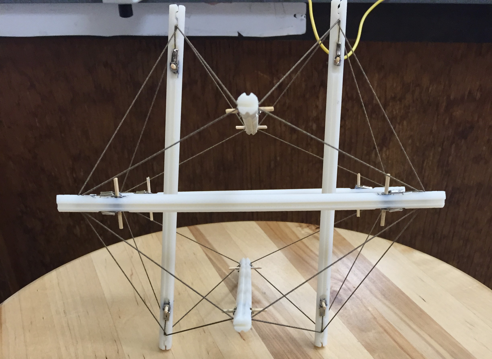

Tensegrity Robots
While a part of UTD’s NanoExplorers Program, I conducted research on integrating nylon-66 artificial muscles into tensegrity structures in order to create adaptable and lightweight robots. Over the course of the 10 week program, my partner and I developed two different styles of tensegrity robots, one based on an icosahedron and the other based off a snake. These robots functioned due to the fact that, when properly prepared and trained, the nylon-66 artificial muscles contract when an electrical current heats them up which allows them to function as actuators. Due to their compactness and ability to adapt over time to different amounts of stress these muscles create robots capable of deforming to absorb large amounts of force while still returning to their original form. At the end of the program my teammate and I presented our findings at a public symposium. Overall, our research showed that artificial muscles could be integrated into lightweight structures to serve as structural actuators which could also adapt to absorb impacts by deforming and then becoming retrained into the proper position, a special feature of artificial muscles.
Icosahedron
1st Prototype
The initial prototype was constructed using chopsticks as the frame as they were readily available and allowed us to very quickly test the concept before beginning refined prototypes. We then integrated four artificial muscles into an icosahedron tensegrity structure while leaving the rest as neutral rubber bands. When the muscles of this mock up were actuated properly it was able to roll over which led us to making a cleaner prototype completely comprised of muscles.
Final Prototype
The revised icosahedron tensegrity prototype featured designed 3D printed rods which organized the network of muscles and prevented shorting when the muscles were actuated. While this version was able to manipulate itself into different configurations, the nylon artificial muscles proved to not allow enough flexibility to deform to the point of allowing movement. We decided that in order to correct this we could move the mounting point of the muscles lower and loop them over each other to increase the length as longer length results in higher actuation and greater flexibility; however, the deadline for the program was approaching and we did not have enough time to implement a redesign.
Snake Bot

When it became clear that we would not be able to get the icosahedron structure to work without a complete redesign, we began working on a snake-like structure which we believed would be completed prior to our final presentation. Four artificial muscles under initial tension held this structure together while foam balls in between the joints allowed for the compression to change its form drastically, a feature which corrected the main flaw of the icosahedron structure. The snake structure quickly reached the point where we could control it manually using external power supplies. Our goal was to then create circuits to make controlling it more efficient; however, our deadline was approaching and the project was left in the manual control state for the presentation. While we had to leave this project incomplete due to the short amount of time we had available to us we were able to control a simple control system featuring mosfets which was not implemented.